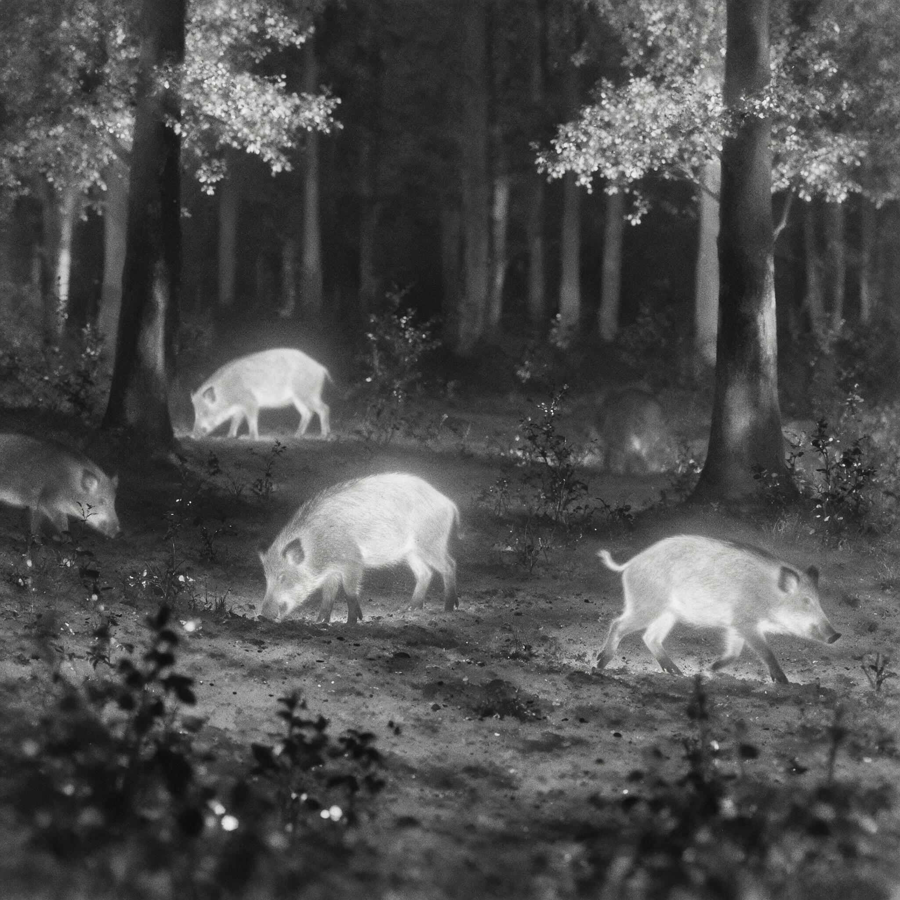

第 8 章
声母群
红外相机架设第一夜，南卡罗来纳州低地没有风。水橡树的气根垂进黑水，落羽杉的膝根从泥里拱出来，像一群半埋的脊骨。

隐蔽帐搭在河湾内侧的一处小丘上，离那片被翻搅过的泥泞空地大约十九米。摄影师把镜头对准空地中段，焦距设定在七码，景深只够容纳三头成年猪并排走过。她带来的记忆卡可以存十六个夜晚的连续影像，电池包分成四组，每组供电九十六小时。
这是她第一次独自执行这么长的蹲守。设置相机时，她在笔记本第一页写下：目标是记录野猪群体内部的空间秩序，不追逐戏剧性冲突，不制造人为光源，不投放诱饵。三个“不”字用蓝色圆珠笔圈了两遍。
她叫玛格丽特·陈，四十一岁，合同摄影师，受雇于一个覆盖南卡低地三县的区域环保组织。雇主的原始委托很简单：前一年秋天，河湾对岸布莱恩县的玉米地在两周内被野猪翻掉了四成，农场主们想知道猪群的夜间路线图，想知道它们在哪里渡河，在哪里集结。玛格丽特接到的指令是拍摄猪群活动节律，标记涉水点。
她主动把范围扩大到社会结构，因为直觉告诉她，只用路线图回答不了真正的难题：为什么那几片玉米地年年被选中，为什么诱捕装置在同一位置失效三次之后猪群仍能绕过它抵达河岸，以及为什么那些渡河路径的复用精度，已经接近某种被维护的公共设施。接下来两个夜晚影像里只有泥地。泥地，偶尔掠过的北美夜鹰，还有一次是一只浣熊蹲在画面中央抓了四十七秒的鳃。浣熊离开时，尾巴扫过镜头边缘，留下一条模糊的黑影。玛格丽特在回放时反复看了这一段，确认不是快门故障。
第三夜凌晨两点十四分，第一头猪进入画幅。它从右侧的锯齿棕榈丛中走出来，鼻尖距地面不足一英寸，路线几乎是一条直线。它的肩高大约到成年女性的髋部，毛色深褐，耳根处有一块颜色刺眼的红色斑块。那是一块塑料耳标，已经褪成了旧伤口般的暗粉，表面涂层剥落，边缘翘起。
猪的右前腿踩过一截横在水渍洼旁的落枝，树枝折断的声音在影像里脆得像一粒石子掉进铁桶。它没有抬头。
鼻突贴着泥面推进，两个半弧形的拱痕留在身后，像有人用钝锹刮过。红外模式下，猪的眼睛不会发光。画面里只有皮肤下透出的浅灰体温，像一块移动的热源。玛格丽特后来在笔记里写道：镜头里没有“红眼”，没有反光，只有身体本身。
她给这头猪起名为“红耳”，依据不是那枚塑料耳标，而是耳标下方那圈被撕裂过的耳廓，肉已经长合，做成一个V形的缺角。这个缺角在红外影像里比耳标更清晰，因为缺口处没有毛，皮肤表面更薄，温度更高，在黑白热像中白得刺眼。
“红耳”在空地中央绕了三个来回，鼻突停在一丛翻开的泥炭处，又折向左侧。第三趟走完，它后腿微曲，就地半卧。
约十秒后，另一头体型略小的猪从同一侧进入画幅，肩高稍低，耳上没有标，也没有缺口。它走到“红耳”身侧，鼻突短暂地触了触后者的颈侧，然后绕到空地外围，面朝来路，前腿直立，头部抬起。
紧接着，四头更小的猪鱼贯而入，最小的那头只有前者的三分之一高，几乎贴住地面移动。它们没有四处试探，径直走到“红耳”周围，停下，纷纷卧下。
两个亚成体成员最后进场，没有卧下，而是在空地边缘走了两圈，其中一头几次把鼻突伸向“红耳”头部方向，都被“红耳”侧过脸去不予理会。这段影像总共十八分钟，群体在空地上像一枚摊开的扇贝：最中心是“红耳”和仔猪，中间圈是两岁左右的女儿们，边缘是亚成体。空地的圆心不在摄像头正对的中央，而在“红耳”侧躺的位置。画面里，她身体承受着所有其他猪的位置参照，好像整片泥地都在绕着她缓慢沉降。
玛格丽特在第四天白天整理前夜资料时，第一次画出了这个群体的空间结构。她翻遍影像，数出十一头猪。红耳是唯一的成年繁殖母猪，带着至少两头已有生育经验的后代母体，两个亚成体女儿，其余是当季仔猪。另外有两头老龄猪只出现过一次，在第三夜之后未再入画。
她没有在笔记里使用“等级”或“权力”这些词，只写下：圆心明确，扩散按体径递减，外围成员变动最频繁。后来说到这段观察时，她用一个词来形容结构：稳定。不是秩序，不是威权，是可以重复的形状。第五夜之后，规律开始显现。
群体几乎每天都会在凌晨一点到三点之间经过这片空地，有时停留半小时，有时只停留八分钟。红耳的路线大致相同，从北侧蕨丛底下钻出，沿固定路径穿过空地，再绕到西侧浅沟处饮水。路线并不完全一致，但有一项是固定的：亚成体和警戒个体走在前面或外围，仔猪从不进入画面的第一帧。每次进出，群体都保持相同的层序。玛格丽特在笔记里画出时间线，用箭头标出成员位置，发现外围亚成体的站位动作总在母体离开之后出现。她写道：“看上去像在等指令，但更像是在等一个特定的移动起始点。红耳不动，谁都不动。”
这是声母群最基础的空间语法。在所有野猪种群中，群体的最小稳定单元不是个体，不是随机聚合的猪群，而是由一头或数头成年母猪及其后代组成的母系社群，生态学家称之为sounder。成年公猪在大部分时间里独居或结成松散的临时小群，游荡范围远大于声母群，在繁殖季短暂接触后便离开。真正维持种群存续和空间记忆的，是这些以母系血缘为轴心的声母群。
它们不是单纯的庇护结构。母猪在群体中扮演的角色同时覆盖繁殖、警戒、觅食决策和信息传递。成年女儿们留在母系群体中的时间远比公猪长，亚成体母猪在离群独立之前，有数月至一年的时间窗口来习得母体的空间知识。这个时间窗口，解释了为什么声母群能在同一片土地上维持多年稳定的活动范围。
玛格丽特知道这些理论背景。她在接受委托之前翻阅过相关文献，其中最令她着迷的一篇来自一组西班牙行为生态学家，在埃斯特雷马杜拉的栎林里追踪了五个野猪声母群，连续五年。
研究发现老母猪的活动中心年际变动极小，女儿亚群在离巢建立新群体前，往往重复使用母系核心区域两到三个季节。换句话说，野猪的空间知识不是每代重新探索得来的，而是从一个老女人传给她的女儿们，再由女儿们传给自己的仔猪。这种代际传递的链条如果被打断——比如老母猪被猎杀——整条活动路线的稳定性就会崩塌。论文用了“matriarch as repository of cultural information”的措辞，“文化信息储存库”。玛格丽特在复印这篇论文时，在边缘用铅笔标注：不是文化，是活档案。
第七夜，她目睹了一次觅食教学。影像中，“红耳”带领群体穿过空地后没有直接去饮水，而是转向南侧一片被蕨类覆盖的缓坡。那里有一棵倒下的山毛榉，树干大半已腐，树皮剥离处露出蜂窝状的蛀孔。“红耳”用鼻突翻开树干边缘的树皮，从蛀孔里舔食某种虫蛹。一头仔猪凑过来闻了闻树干，没有做出相同动作，只是在附近拱泥。“红耳”退后一步，让它拱。
仔猪拱了几下没有收获，“红耳”再次用鼻突翻开另一处树皮，这次动作慢得多，鼻子将树皮掀到足够高度，露出底下成团的白蛹，然后退开。仔猪上前吃掉虫蛹，另一头仔猪立刻挤过来拱同一位置。整个过程持续了大约四分钟。这段影像后来在她的报告里只浓缩成一句话：“观察到成年母猪带领仔猪觅食并教导其识别特定微生境中的食物斑块。”她没有使用“教导”这个词。雇主不会为行为学埋单。但她在私人笔记里画了一个教学环节的时间轴，标注了示范、后退、观察、尝试四个步骤，旁边写了一行小字：“如果不把这叫教学，那需要发明一个新词。”
野猪的入侵成功并非仅仅依赖生理上的可塑性。单独一头猪再能吃再能生，也无法在陌生地貌中迅速建立持久种群。关键变量在于声母群作为信息单位的存在。一头老母猪可以记住安全路径、水源位置、季节性食物斑块和人类活动的节律，并将这些知识传递给后代。信息在代际间流动，对陷阱、围栏和猎犬的记忆可以保留多年。
这使得针对个体的清除策略在面对一个完整的声母群时往往失效。杀死散兵游勇的公猪毫无意义——声母群不需要公猪来维持日常运行，只要核心母猪存活，种群就能在下一个繁殖季迅速恢复。一头健康母猪每年可产两胎，每胎平均五到六头仔猪，仔猪在六至八个月后性成熟。一个拥有三头繁殖母猪的声母群，在食物充足的情况下，十八个月内可以膨胀至三十头以上。
第十二夜，猎犬的吠叫声从远处传来。影像记录的时间显示为凌晨三点四十一分。“红耳”当时正半卧在空地中央，几头仔猪贴着她的腹部，鼻突埋在乳区。吠声进入话筒时已经失真，听起来像隔水敲鼓，闷而持续。画面里，群体全体同时抬起头。
红耳的耳廓先转向来声方向，停顿不足一秒，她从地面缓缓站起，动作低垂，颈部与脊背保持同一水平。然后她发出一种低频喉音——画面里看不到声带振动，只能从周围的猪瞬间的同步反应中推断信号的存在。两头成年女儿迅速压低头位，把仔猪往“红耳”方向驱赶。整个群体在几秒内从空地上散入南北两侧的灌木，像杯底搅动的水。
画面里最让玛格丽特意外的是没有一头仔猪发出尖叫。只有一头亚成体母猪犹豫了半秒，站在空地边缘，身体朝向错误的方向。“红耳”折返一步，鼻突轻拱它的后腿外侧，它才转身跟入最北侧的蕨丛。整段影像从第一声吠到画面空白，持续九秒。
玛格丽特在回放时反复播放了“红耳”拱那头亚成体的瞬间。速度极快，动作幅度极小，如果不是逐帧回放，很容易被当成视频噪点。猪在群体逃离前耽搁的那半秒，在整段影像上形成了一个明显的停顿——像一支队伍中某人晚了半个节拍。“红耳”用鼻突补上了这个节拍。玛格丽特在笔记里写：这不是母性，这是机制。
后来她在这行字下面又加了一行：没有一头猪回头张望。它们的方向感不依赖视觉确认，可能来自听觉、嗅觉或地面振动。但影像本身无法给出答案。
随后两天，玛格丽特驱车去了查尔斯顿县图书馆。她想知道那只耳朵上的缺口是否与某次已知的官方行动有关。耳标已经褪色到几乎看不清原色，缺口愈合得很好，形成光滑的V形边缘，不像与其他猪争斗留下的撕裂伤，更像人为标记。图书馆的地方报纸缩微胶卷室里，她在三年前《查尔斯顿信使报》的地方版上找到一则报道，百来字，标题是《州野生动物部门诱捕野猪群》，内容简短：州野生动物与海洋资源部门在低地某处私人林地设置诱捕围栏，捕获十五头，数头逃脱，部分个体带有耳标。报道没有说明耳标颜色，没有给出具体地点，没有后续跟踪。日期栏勉强能辨认出年份和月份，日号已经糊掉。
玛格丽特把复印件折好夹进笔记本，用订书钉固定。旁边写了一句：“缺口与报道之间只差一块具体的耳标颜色。”她后来解释过为什么要保留这个联系。
不是因为想给“红耳”编造一个传记，而是因为这种标记本身就是治理逻辑的物证：标记个体、诱捕群体、记录数量、报告成绩。逃脱的个体带着标记消失在林地里，成为下一次治理行动无法覆盖的变量。耳标本应是个体识别的手段，但当标记对象融入一个有集体记忆的声母群时，这枚耳标变成了另一种东西——一个移动的证据，证明那块地被清过但没有清空，证明那套以个体为单位的诱捕策略在面对一个有信息传递机制的社会群体时，只能捕捉那些还没有学会的老母猪和没有受过训练的亚成体。
第十四夜降雨。红外相机记录下的画面变成一米深的灰幕，只能看见水珠划过镜头，泥地在水击下翻起细密的泡沫。没有猪进入画幅。玛格丽特整夜醒着，每隔几小时换掉帐篷外围的吸水布，防止雨水沿地布渗进器材。雨打在水橡树叶片上的声音持续不断，偶尔有一截枯枝沉沉砸进沼泽。第二天清早，泥地上布满细小的溪流，野猪翻出的坑洞全变成了连续的水洼。第十五夜，“红耳”回来。她比前几夜更晚到达，凌晨四点才进画。
群体规模少了两头，最年轻的亚成体没有出现。“红耳”左前腿有些跛，落地时肩部明显压低。它走到空地中央只停留了四分钟，没有卧下，一直保持站立。仔猪频繁从它后腿后面钻出来拱泥，不敢走远。
群体离开时走了一条不同于以往的新路径，直接从东侧浅沟泅水过去，那片水面因为降雨上涨到半米多深。玛格丽特在后来的分析中推测，这条涉水路线不是为了抄近路，而是为了让气味连续中断。猎犬追踪依靠破碎的气味颗粒，野猪如果连续涉水，气味羽流会被水流切断并沿下游飘散，不再附着在固定的地面物体上。
她没有实验证据支持这个判断。但她记录了一个事实：从那夜之后，群体再未使用过旱季的常规路径。她画了两张对比草图，旧路线用虚线标注“终止于降雨夜”，新路线用实线标注“泅水点”。
第十七天傍晚，玛格丽特拆除了相机。拍摄许可只签到这夜。最后一晚她没有启用红外模式，只在日落前用裸眼看了看那片空地。光线斜到落羽杉的根部以下，泥地上的猪蹄印和水痕相叠，像一张用旧了的棕灰色地图。
她把记忆卡装进防水盒，折叠隐蔽帐外帐，支撑杆一根根抽出来捆成四捆塞进背包侧袋。离开前她站在小丘上回望。空地几乎隐入暗处，只有几处浅水洼还在反射天光。
她知道“红耳”和那个声母群还在某处。可能在东侧浅沟的另一边，可能在蕨丛浓密处，也可能已经离开这片林地去往别的洪泛区。它们不必让她看见。过去十七夜里，那些猪只被拍到时才出现在影像中，其余时间它们是林间连续的阴影。
玛格丽特记起第五夜的一段影像：凌晨两点，群体离开空地时，最后一头猪的身影消失在蕨丛后的第五秒，画面右侧的一根水橡树枝轻轻弹回原位。她知道那不是猪碰的，可能是风，也可能是一只鸟。但那个极微小的移动
红外相机架设第一夜，南卡罗来纳州低地没有风。水橡树的气根垂进黑水，落羽杉的膝根从泥里拱出来，像一群半埋的脊骨。隐蔽帐搭在河湾内侧的一处小丘上，离那片被翻搅过的泥泞空地大约十九米。摄影师把镜头对准空地中段，焦距设定在七码，景深只够容纳三头成年猪并排走过。
她带来的记忆卡可以存十六个夜晚的连续影像，电池包分成四组，每组供电九十六小时。这是她第一次独自执行这么长的蹲守。设置相机时，她在笔记本第一页写下：目标是记录野猪群体内部的空间秩序，不追逐戏剧性冲突，不制造人为光源，不投放诱饵。三个“不”字用蓝色圆珠笔圈了两遍。
她叫玛格丽特·陈，四十一岁，合同摄影师，受雇于一个覆盖南卡低地三县的区域环保组织。雇主的原始委托直接到功能层面：前一年秋天，河湾对岸布莱恩县的玉米地在两周内被野猪翻掉了四成，农场主们要求知道猪群的夜间路线图，想知道它们在哪里渡河，在哪里集结。玛格丽特接到的指令是拍摄猪群活动节律，标记涉水点。
她主动把范围扩大到社会结构，因为直觉告诉她，只用路线图回答不了真正的难题——为什么那几片玉米地年年被选中，为什么诱捕装置在同一位置失效三次之后猪群仍能绕过它抵达河岸，以及为什么那些渡河路径的复用精度，已经接近某种被维护的共有记忆。接下来两个夜晚，影像里只有泥地。泥地，偶尔掠过的北美夜鹰，还有一次是一只浣熊蹲在画面中央抓了四十七秒的鳃。浣熊离开时，尾巴扫过镜头边缘，留下一条模糊的黑影。玛格丽特在回放时反复看了这一段，确认不是快门故障。第三夜凌晨两点十四分，第一头猪进入画幅。它从右侧的锯齿棕榈丛中走出来，鼻尖距地面不足# 第8章 声母群
红外相机在三脚架上轻轻嗡鸣，那是电池包供电的声音。玛格丽特·陈用袖子擦掉镜头外环上的露水，把防水布重新盖好。隐蔽帐搭在南卡罗来纳州低地的一片洪泛森林里，河湾内侧的小丘上，距离那片被野猪反复翻掘过的泥泞空地大约十九米。她设置了两台相机，一台红外摄像机对准空地中段，焦距七码，景深只够容纳三头成年猪并排走过；另一台高清数码相机备用，电池包分成四组，每组供电九十六小时。
她带来的记忆卡可以存十六个夜晚的连续影像。这是她作为合同摄影师第一次独自执行这么长的蹲守。设置相机时，她在笔记本第一页写下此行目标：记录野猪群体内部的空间秩序，不追逐戏剧性冲突，不制造人为光源，不投放诱饵。三个“不”字用蓝色圆珠笔圈了两遍。她的雇主是覆盖低地三县的一个区域环保组织，原始委托很简单：前一年秋天河湾对岸的玉米地在两周内被野猪翻掉了四成，他们需要猪群的夜间活动节律和渡河路线。
但玛格丽特心里清楚，路线图只能回答猪从哪里来，无法回答那个更难缠的问题——为什么年年诱捕，猪群还在，而且规模更大。前两夜红外相机只拍到泥地。北美夜鹰掠过画幅边缘，一只浣熊蹲在画面中央抓了四十七秒的鳃。第三天凌晨两点十四分，第一头猪进入画幅。那是一头成年母猪，从右侧锯齿棕榈丛中走出来，鼻尖距地面不足一英寸，路线几乎是一条直线。
它的毛色深褐，左耳上有一块褪成暗粉色的塑料耳标，耳廓下方还有一个V形的缺角，肉已经长合，边缘光滑，红外热像中白得刺眼。玛格丽特后来给它起名叫“红耳”，依据不是耳标，而是那个缺口——耳标可能脱落，但缺掉的肉不会重新长出来。
红耳绕了空地三个来回，在泥炭翻开处略作停留，然后后腿微曲，就地半卧。另一头体型稍小的母猪从同一侧进入，没有耳标，走到红耳身侧，鼻突短暂地触了触后者的颈侧，然后绕到空地外围，面朝来路，前腿直立，头部抬起。这是警戒姿势。接下去十秒内，四头仔猪鱼贯而入，径直走到红耳腹侧卧下。
随后入场的是两头亚成体，在空地边缘徘徊，其间一头几次将鼻突伸向红耳头部方向，都被红耳侧过脸去不予理会。整段影像十八分钟，群体在空地上像一枚摊开的扇贝——红耳和仔猪在最中心，有生育经验的女儿们在中间圈，亚成体在边缘。玛格丽特在笔记里画下这个空间排列，标注道：圆心明确，扩散按体径递减。
她没有使用“等级”或“权力”这类词汇，只写下“稳定”——不是秩序，是形状可以重复。这个群体就是野猪种群中最基础的单元：声母群。在行为生态学的定义里，声母群由一头或数头成年母猪及其后代组成，是母系制的社会组织。成年公猪平时独居或结成松散临时小群，只在繁殖季与声母群短暂接触。
真正维持种群存续和空间记忆的，是这些以血缘为轴的母系群体。玛格丽特在接这个项目之前读过相关文献，其中一篇追踪西班牙埃斯特雷马杜拉栎林里五个声母群的研究结论很清楚：老母猪的活动中心年际变动极小，女儿亚群在离巢建立新群体前，往往重复使用母系核心区域两到三个季节。
母猪不只是繁殖单位——它们是“文化信息储存库”。第五夜到第十一夜，规律浮现。声母群每天凌晨一点至三点之间经过空地，有时停留半小时，有时仅八分钟。红耳的路线大致固定：从北侧蕨丛钻出，沿固定路径穿过空地，绕到西侧浅沟饮水。每次进出，群体保持相同的层序——亚成体和警戒个体走在外围或前方，仔猪从不先父进入画面。玛格丽特注意到一个细节：外围亚成体的站位动作总在红耳开始移动之后出现，精确到几乎像是被一声听不见的信号同步触发。她在笔记里写：“看上去像在等指令，但更像是在等一个特定的移动起始点。红耳不动，谁都不动。”
这期间有过一次觅食教学。影像显示红耳带领群体穿过空地后转向南侧蕨类覆盖的缓坡，那里有一棵倒下的山毛榉，树干大半已腐，树皮下露出蜂窝状的蛀孔。红耳用鼻突翻开树皮，舔食蛀孔里的虫蛹，然后退开，让一头仔猪上前。仔猪起初拱了几下没有找到食物，红耳再次翻开另一处树皮，这次动作慢得多，将树皮掀到足够高度露出底下的白蛹，退后。仔猪吃掉虫蛹，另一头立刻挤过来拱同一位置。
整段影像持续约四分钟。玛格丽特在此事的报告仅浓缩为一句话：“观察到成年母猪带领仔猪觅食并识别特定微生境中的食物斑块。”但在私人笔记里，她画了教学时间轴，标注示范、后退、观察、尝试四个节点，旁边写：“如果不把这叫教学，那需要发明一个新词。”
第十二夜，猎犬的吠叫声从远处传来。时间戳记录为凌晨三点四十一分。红外影像里，红耳正半卧，仔猪贴着她的腹部。吠声进入话筒时已经失真，闷而持续。画面里全体猪几乎同时抬头，红耳的耳廓先转向来声方向，停顿不足一秒，她站起，动作低垂，颈部与脊背保持水平。然后她发出一种低频喉音——画面里看不到声带振动，只能从周围猪的即时反应推断信号的存在。
两头成年女儿迅速压低头位，把仔猪往红耳方向驱赶。整个群体在几秒内散入南北两侧灌木，没有一头仔猪发出一声尖叫。只有一头亚成体母猪犹豫了半秒，站在空地边缘，身体朝向错误的方向。红耳折返一步，鼻突轻拱它的后腿外侧，它才转身跟入北侧蕨丛。从第一声吠到影像画面空白，总共九秒。玛格丽特反复回放那半秒的停顿和鼻突轻拱的瞬间。
速度极快，动作幅度小到如果不是逐帧放映就会被当成噪点。这九秒的撤离，是十七夜里最明确的一次群体反捕食反应。她在笔记里写道：“这不是母性，这是机制。”然后又加一行：“没有一头猪回头张望。它们的方向感不依赖视觉确认。但影像无法还原气味和地面振动信号，只能描述姿态和相对移动速度。”
那个白天她驱车去查尔斯顿县图书馆翻旧报纸缩微胶卷。红耳耳朵上的耳标缺口不新不旧，愈合得很平滑。如果之前是官方行动留下的，当地报纸或许有记录。她找到的是三年前《信使报》地方版上一则百字报道，说州野生动物部门在低地一处私人林地设诱捕围栏，捕获十五头，数头逃脱，部分个体带有耳标。没有耳标颜色，没有具体地点，没有后续调查。玛格丽特把缩微胶卷的复印件折好夹进笔记，旁边写：“缺口与报道之间只差一块具体的耳标颜色。”
她知道这不是直接证据，但它说明一件事：那头带着标记的母猪逃脱了，而且三年来它不仅活着，还一直在繁衍和带领它的后代。这一事实揭示了一个治理困境的核心。
猎杀公猪毫无意义——声母群不需要公猪来运行。杀死几头亚成体，只要核心母猪还在，种群在下一个繁殖季就能迅速恢复。一头健康母猪每年产两胎，每胎五到六头仔猪，仔猪六到八个月后性成熟。一个拥有三头繁殖母猪的声母群，在食物充足的情况下，十八个月内可以膨胀至三十头以上。
而一个在诱捕行动中学到教训的老母猪，是极难再次被捕获的。它的经验——金属围栏的气味、人类汗液在土地上的残留、车辆引擎的震动频率——不会随着它的死亡而消失，因为它已经把这些教给了它的女儿们。
玛格丽特后来说，那枚褪色的耳标让她想到的不是“一头聪明的猪”，而是制度设计的错配。美国的野猪治理长期以个体为清除对象：奖励猎手按头计数，诱捕装置瞄准群体但往往只能捉到亚成体和没有经验的两岁猪，猎犬追踪的是气味而不是记忆。可治理对象本身——声母群——是一个有信息传递、有代际传承的集体单位。
碎片化的清除操作打散不了解构精密的母系秩序，就像你剪掉植物地上的叶子，没有动到地下的根。这不是在指责猎手或诱捕人员的技术问题，而是整个治理逻辑的上游缺陷：各州各自为政，私人土地上各自出钱，没有人愿意为一个穿梭于四块不同产权地块之间的声母群制定跨地产的清除方案。猪不承认地界，但法律、资金和许可制度严格地按照地界运行。第十四夜降雨。画面变成灰幕，水珠划过镜头。
野猪没有出现。玛格丽特整夜醒着换吸水布，听着雨打在水橡树叶上。次日早上，泥地布满细小溪流，猪翻出的坑洞全变成水洼。第十五夜红耳回来，左前腿有些跛，群体少了两头最年轻的亚成体。它只在空地停了四分钟，没有卧下。离开时走了一条新路径——直接泅过因降雨而上涨到半米多的东侧浅沟。
玛格丽特的后来的分析认为这是为了用流水中断气味羽流，让猎犬难以追踪。她在草图上标注：“新路线，可能涉水。”没有实验支持，只是观察。第十六夜没有动静。第十七夜她拆除了相机。拍摄许可只签到这夜。她在日落前用裸眼看了看空地，泥地上的猪蹄印和水痕相叠，像用旧的地图。
她把记忆卡装进防水盒，收帐篷，束杆，塞进背包。离开前回望那片即将没入黑暗的林地，她知道红耳和声母群还在某处，可能在东侧浅沟对岸，可能在蕨丛深处。它们不必让她看见。十七夜里它们只被拍到时才出现在影像中，其余时间它们是林间连续的阴影。
玛格丽特坐进车里，把绿色防水布封面的笔记本放在副驾驶座上，封面写着一行字：“声母群，十七夜，红外记录。”林地在右后窗里越退越小，她想，连这片林地本身也不属于公共财产——南卡罗来纳州大部分林地掌握在私人手中，她之所以能在这里架相机，是因为一家狩猎俱乐部给了书面许可，那人在电话里说过：“观察可以，但不要告诉别人猪在哪儿。”
同年夏天，玛格丽特受雇提供的影像在一次闭门讨论会上被播放。当地一个小型土地管理委员会计划对河湾以东的野猪翻耕问题采取季度诱捕行动。
她用投影放了三段视频：群体空间排列、九秒撤离的全部过程、涉水渡河时仔猪贴紧母猪后腿的画面。放完后猎场管理员问：“哪一头先打？”区域协调员说诱捕装置一次能捕到六七头，大多是亚成体，老母猪极难进。此前一年捕到十五头，没有一头体长超过一百二十厘米。猎场管理员说：“老母猪学得最快。
有一次失败，它们能记住围栏金属的气味。”他说不清是气味还是别的东西，只知道他的猎场里有三个被“报废”的诱捕点，猪还在附近活动，绕过去，就是不进去。玛格丽特没有插话，但她后来在笔记里写下一条记录：在场的所有人都默认猪群有自己的地图，但讨论方案时，行动边界仍然刻在产权线上。声母群的秩序横向穿过四块私有土地，没有一块地主愿意把资金和准入权交给邻居。那年入秋她回去过一次。猎场管理员已经清理了西侧林道，路面宽了两英尺，蕨类被压碎。
她站在空地入口，看见新的猪蹄印被雨水灌满，里面游着一只极小的蝌蚪。她没有再往里走。车驶出碎石路时，她从后视镜看见一只鸟从落羽杉上飞起。她想起最后一次红外影像的最后一帧——红耳站在齐腹的浅水中，背后是密不透光的灌木。下水之前它在岸边停了一下，回头看了一眼来的方向。
那不是警觉，也不像张望。她不知道那叫什么。但她知道镜头之外还有没被拍到的个体，而理解这个声母群的关键，也许就藏在那些从未进过画面的猪身上。缺失的数据不会自己说话，但它留下的沉默比那些清晰影像加起来都更让人无法忽视——尤其是当你意识到，每次你以为自己看见了一整套秩序时，总有一部分正安静地退出画幅边缘。